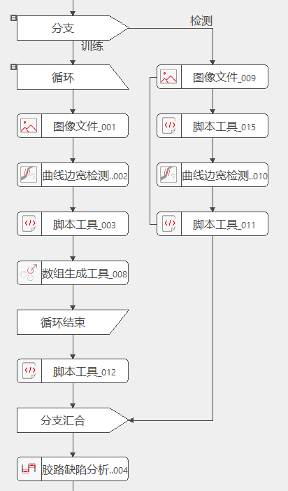

胶路缺陷分析工具，针对非均匀线状胶/点状胶的建模和检测，准确反馈缺陷路径
主要应用在点胶检测项目中
通过对样本点集进行训练，计算出标准中心点集与标准宽度；执行检测时，将输入点集与训练结果进行对比，计算出胶路的宽度偏差和中心偏差，从而根据检测阈值参数判断出缺陷类型、缺陷位置等信息。
胶路缺陷分析工具.gvp为例，如图4-1所示
曲线边宽检测工具获取样本图像的边缘点集脚本工具获取曲线边宽检测工具检测区域ROI的每段点集，将其放入数组生成工具，脚本工具_003内容如下：python
vvvPoints=GvTool.GetToolData("曲线边宽检测工具_002.候选点")
GvTool.SetToolData("数组生成工具_008.输入数据",vvvPoints[0])
如此进行循环，循环次数为样本图像个数
脚本工具_012是将胶路缺陷分析工具切换为训练模式，代码如下：
python
GvTool.SetToolData("胶路缺陷分析工具_004.是否启用训练",True)
脚本工具_015将训练部分的曲线边宽检测工具的检测区域设置到检测部分的曲线边宽检测工具中，使训练和检测的位置保持一致，代码如下：python
roi=GvTool.GetToolData("曲线边宽检测工具_002.检测区域")
GvTool.SetToolData("曲线边宽检测工具_010.检测区域",roi)
曲线边宽检测工具获取检测图像的边缘点集，通过脚本工具设置到胶路缺陷分析工具中，代码如下：python
vvvPoints=GvTool.GetToolData("曲线边宽检测工具_010.候选点")
GvTool.SetToolData("胶路缺陷分析工具_004.输入点集",vvvPoints[0])
GvTool.SetToolData("胶路缺陷分析工具_004.是否启用训练",False)
| 参数名称 | 参数说明 |
|---|---|
| 输入点集 | 待检测的胶路点集，由脚本工具从曲线边宽检测工具中获取并设置到胶路缺陷分析工具，数据结构为vector<vector<point>> |
| 训练点集 | 待训练的胶路点集，点集来自于曲线边宽检测工具的检测结果，由数组生成工具进行汇总，数据结构为vector<vector<vector<point>>> |
| 输入图像 | 待检测工件的图像，实际不参与检测，仅起到辅助显示的作用 |
| 训练图像 | 待训练工件的图像，实际不参与训练，仅起到辅助显示的作用 |
| 参数名称 | 参数说明 |
|---|---|
| 标准中心点集 | 由多组胶路点集数据训练所得到的胶路中心点集（数组大小为卡尺数量） |
| 标准宽度 | 由多组胶路点集数据训练所得到的胶路宽度（数组大小为卡尺数量） |
| 宽度偏差 | 待检测胶路宽度与标准宽度之间的偏差（数组大小为卡尺数量） |
| 中心偏差 | 待检测胶路中心与标准中心之间的偏差（数组大小为卡尺数量） |
| 少胶胶判定结果 | 少胶检测结果，数据结构为缺陷的卡尺起点与终点序号、面积、最大偏差 |
| 溢胶胶判定结果溢 | 溢胶检测结果，数据结构同上 |
| 正胶偏判定结果 | 正胶偏检测结果，数据结构同上；胶偏为与标准中心比较结果，正方向为每组卡尺第二点指向第一点； |
| 负胶偏判定结果 | 负胶偏检测结果，数据结构等说明同上 |
| 少胶区域 | 少胶缺陷在图像上的位置 |
| 溢胶区域 | 溢胶缺陷在图像上的位置 |
| 正胶偏区域 | 正胶偏缺陷在图像上的位置 |
| 负胶偏区域 | 负胶偏缺陷在图像上的位置 |
| 参数名称 | 参数说明 |
|---|---|
| 是否启用训练 | 工具是否开启训练 |
| 最大训练数目 | 当工具开启训练后，需设置当前的训练样本数 |
| 宽度最小评价连续点数 | 宽度缺陷的最小连续点数，低于此值的不判断为缺陷，属于外部干扰 |
| 宽度评价阈值下限 | 宽度偏差最小阈值 |
| 宽度评价阈值上限 | 宽度偏差最大阈值 |
| 宽度缺陷面积检测阈值 | 宽度偏差面积阈值 |
| 中心偏差最小评价连续点数 | 中心偏差缺陷的最小连续点数，低于此值的不判断为缺陷，属于外部干扰 |
| 中心偏差评价阈值下限 | 中心偏差最小阈值 |
| 中心偏差评价阈值上限 | 中心偏差最大阈值 |
| 中心偏差缺陷面积检测阈值 | 中心偏差面积阈值 |
| 参数名称 | 参数说明 |
|---|---|
| 输入图像 | 输入图像的宽度、高度、像素大小 |
| 训练图像 | 训练图像的宽度、高度、像素大小 |
| 少胶胶判定结果 | 少胶检测结果，数据结构为缺陷的卡尺起点与终点序号、面积、最大偏差 |
| 溢胶胶判定结果 | 溢胶检测结果，数据结构同上 |
| 正胶偏判定结果 | 正胶偏检测结果，数据结构同上；胶偏为与标准中心比较结果，正方向为每组卡尺第二点指向第一点； |
| 负胶偏判定结果 | 负胶偏检测结果，数据结构等说明同上 |
| 执行结果 | 工具的执行结果 |
| 执行时间 | 工具的执行时间 |
参见“\Samples\胶路缺陷分析工具.gvp”。